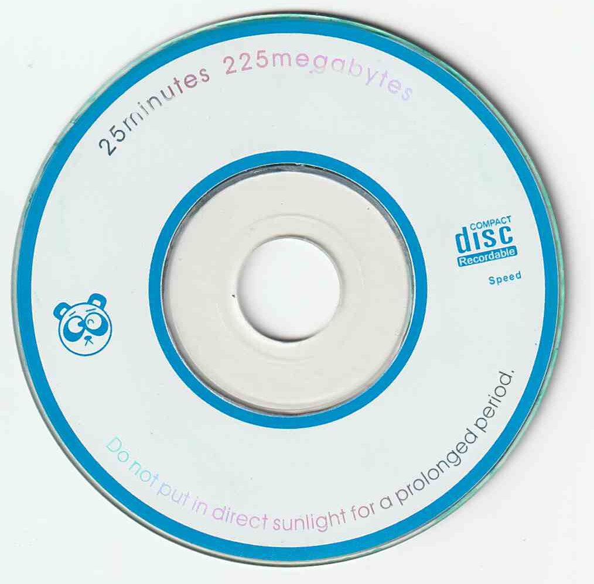

Dumps
Dumps
Software preservation stuff that I have done. Dev wants it gone and it's gone!
Steam Deck LCD BIOS (F7A0107)
This BIOS revision doesn't appear to be present in Valve's git history. Very strange.
This is the last ROM revision before EV2 board support was dropped.
Unforuntately I don't think this can be used with Insyde H2OFFT.
Dumped by Ashie404.
ROM Download
Xbox LIVE Arcade Indie Games
The Xbox Live Indie Games store shut down in 2017, but I managed to snag these games a little before they went down. Enjoy!
3D-structionABC Fun
Avatar Drop
CastleMiner
Flappy Monkey
FlappyAvatar
LaserCat
Match with Wally
Medieval Zombies
Really Scary
Really Scary 2
Really Scary 3
The Impossible Game
The Impossible Game Level Pack
Google Chrome Apps
Most, if not all of these are not accessible anymore on the Chrome Web Store.
Don't GiveUpBlock Jump
Game Boy Advance FireCard CD
A driver CD for this 256M FireCard that I acquired on eBay.
All of it is in Chinese and will likely only work on old versions of Windows.


ISO Image